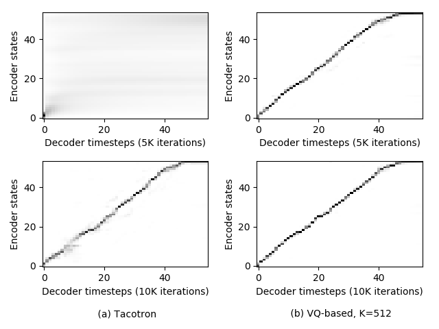
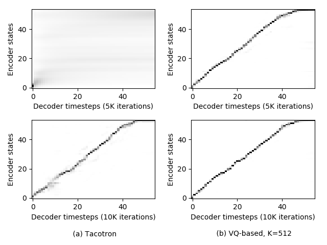

|  | |
 |
 |
1. “Does the quick brown fox jump over the lazy dog.” Tacotron: Proposed: 2. “Generative adversarial network or variational auto-encoder.” Tacotron: Proposed: 3. “Talib Kweli confirmed to AllHipHop that he will be releasing an album in the next year.” Tacotron: Proposed: 4. “Basilar membrane and otolaryngology are not auto-correlations.” Tacotron: Proposed:

1. “But beyond the norm can mean different things.” Teacher-force mode: Inference mode: 2. “They are the corporate equivalents of middle-aged men buying Corvettes.” Teacher-force mode: Inference mode: 3. “Such is my passage engaged on the steamer.” Teacher-force mode: Inference mode:
1 hour training data:
1. “I'm pleased to get through the opening match.” Tacotron: Proposed: 2. “About half the people who are infected also lose weight.” Tacotron: Proposed: 2 hours training data:
1. “I'm pleased to get through the opening match.” Tacotron: Proposed: 2. “About half the people who are infected also lose weight.” Tacotron: Proposed: 4 hours training data:
1. “I'm pleased to get through the opening match.” Tacotron: Proposed: 2. “About half the people who are infected also lose weight.” Tacotron: Proposed: All training data (about 11 hours):
1. “I'm pleased to get through the opening match.” Tacotron: Proposed: 2. “About half the people who are infected also lose weight” Tacotron: Proposed:
1. “Does the quick brown fox jump over the lazy dog.” Tacotron: K=128: K=256: K=512: K=1024: K=2048:
2. “What would be good about that.” Tacotron: K=128: K=256: K=512: K=1024: K=2048:
3. “President Trump met with other leaders at the Group of 20 conference.” Tacotron: K=128: K=256: K=512: K=1024: K=2048: